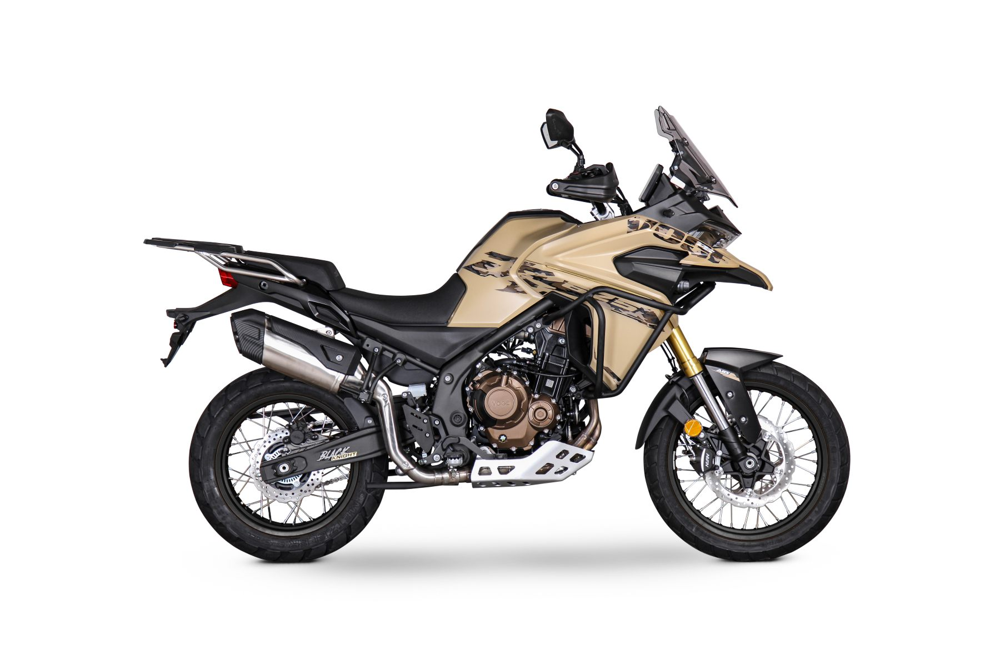

900DSX
900DSX MY2025, una motocicleta que combina tecnología de punta, un
diseño y un precio increíblemente competitivo. Disponible a partir
de febrero de 2025, incorpora nuevas características diseñadas para
maximizar tu experiencia de conducción, tanto en carretera como
fuera de ella.
625DSX

625DSX. Diseñada para ser tu mejor aliada en cualquier terreno, esta
motocicleta combina potencia, tecnología avanzada y un diseño
robusto que se adapta perfectamente a la ciudad, la carretera o las
rutas off-road más exigentes.
525DSX
525DSX MY25 lleva la experiencia Trail a un nivel superior con
importantes actualizaciones que combinan innovación, rendimiento y
estilo. Ha llegado el momento de vivir rutas y viajes inolvidables
en cualquier terreno con la última creación de VOGE.
525R
525R. Gama de cilindrada media cuyo principal cambio reside en la
adopción de la nueva mecánica bicilíndrica en línea, aumentando la
cilindrada hasta los 494 cc con una notable mejora en par motor y
panel de instrumentos por pantalla digital a color, manteniendo
componentes de calidad de primeras marcas
125R
125r Es una naked moderna, extremadamente ágil y segura. Su diseño
vital y juvenil afilado como una espada, se extiende por toda la
moto. Desde su innovador frontal con óptica elipsoidal LED, al corto
escape y al piloto trasero led con efecto 3D.
350ac
350AC es la última incorporación a nuestra gama de motos Naked de
estilo Neo-Retro. Un modelo completamente nuevo, apto para el carnet
A2 y con un nuevo propulsor bicilíndrico que desarrolla una potencia
de 40,7 CV y una parte ciclo y electrónica de primer nivel.
sr1
SR1 125 es un scooter compacto con estética GT, creado por el
prestigioso diseñador italiano Massimo Zaniboni. Está concebido para
hacer los desplazamientos urbanos e interurbanos más cómodos,
gracias a sus compactas dimensiones que le proporcionan una gran
agilidad, estabilidad y extremo confort.
SR1 ADV
SR1 ADV 125 es la scooters Crossover “todo terreno” con el que
puedes romper los límites marcados por el asfalto, saboreando la
aventura de rodar por pistas. Partiendo del innovador motor EFI de
última generación con refrigeración líquida del popular Voge SR1.
SR3
SR3. El equilibrio perfecto entre tamaño y prestaciones. Te
presentamos la opción perfecta para quienes buscáis un scooter con
excelentes prestaciones y gran capacidad de carga, pero que al mismo
tiempo no queréis renunciar a la agilidad en tráfico urbano que te
ofrece un scooter de peso contenido.
SR4 MaxT
SR4 Max T. Potencia y elegancia para el día a día, es el resultado
de la colaboración entre la mejor ingeniería alemana, la capacidad
de fabricación del Grupo Loncin, y el diseño italiano. Este scooter
llega dotado con mejores atributos para destacar en lo más alto de
su categoría.